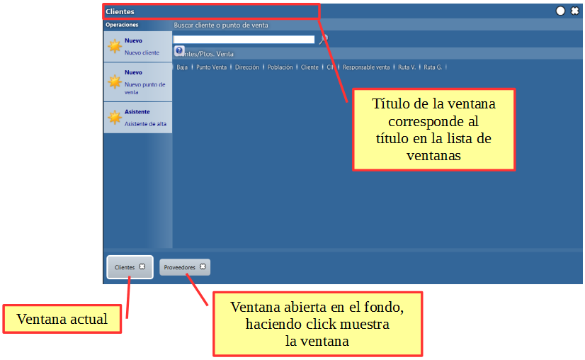
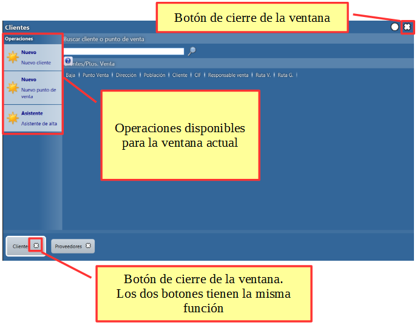
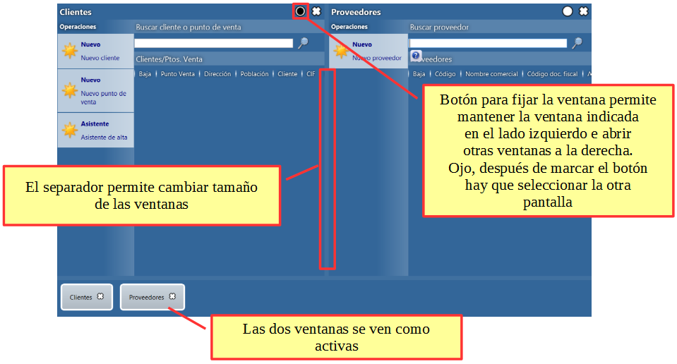

Pantalla actual de trabajo¶
Composición de la zona de trabajo¶


Dos zonas de trabajo abiertas en paralelo¶

Ayuda integrada en las pantallas¶
Si existe una ayuda integrada especifica para la pantalla abierta aparece un botón de acceso a lado del icono de fijar la pantalla.